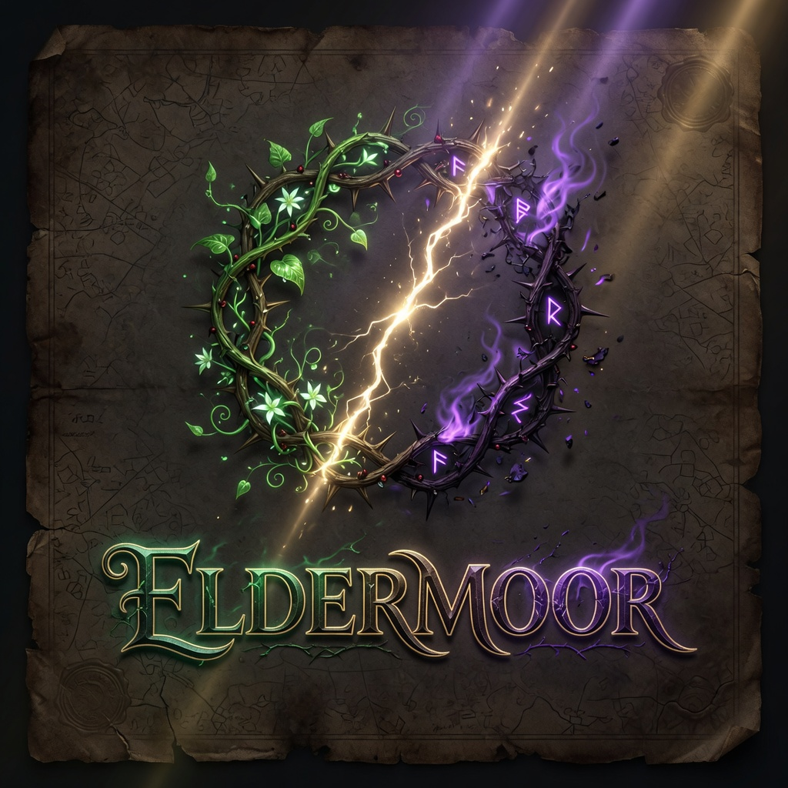
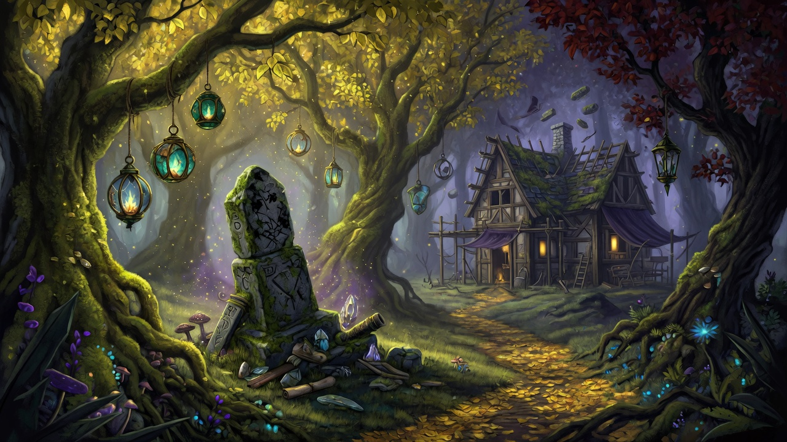
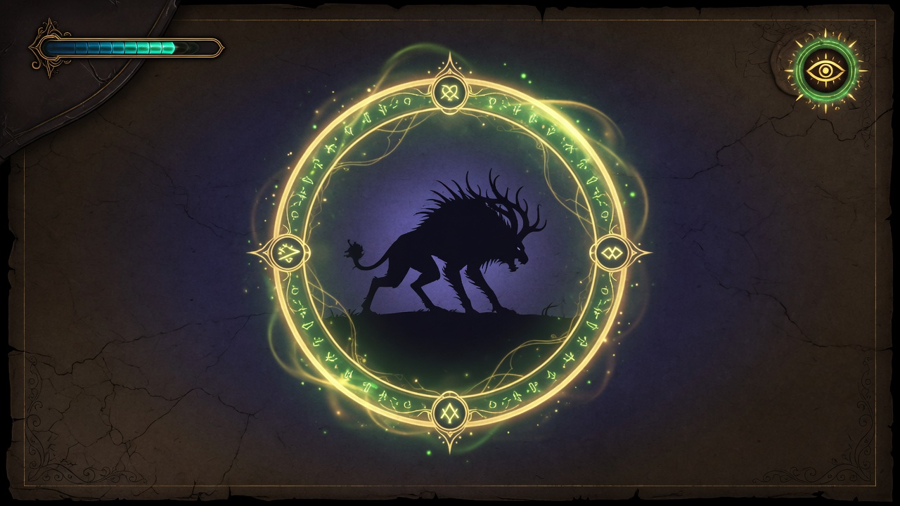
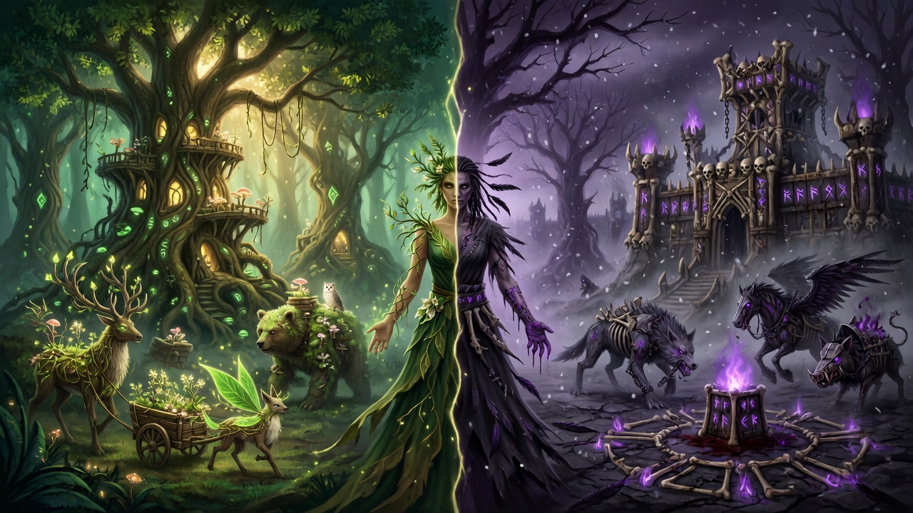

The seals are failing.
After the Veil War, the Academies and High Council locked away the Wild Arcana. You were supposed to stay discarded — a failed student, an unlisted experiment, a nobody.
Bind original magical beasts. Put them to work. Build a camp into a private academy. Choose Vita (Life) or Mortis (Death). When your power cannot be ignored, the High Council marches.
Open-world magic survival sandbox. Original IP. Not affiliated with any existing wizarding franchise.


